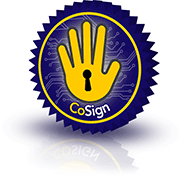

| CoSign: Secure, Intra-Institutional Web Authentication | |
| Open Source Web Single Sign-On | |
An open source project originally designed to provide the University of Michigan with a secure single sign-on web authentication system. cosign is part of the National Science Foundation Middleware Initiative (NMI) EDIT software release.
24 Feb 2012 - cosign 3.2.0 is now available for download. This release adds build integrity testing, adds support for httponly cookies, makes public access an option in .htaccess files, and includes a number of smaller features and fixes. Visit the download page for a full list of changes.
Important - A session fixation vulnerability simplifying phishing attacks was discovered in all releases of cosign up to and including cosign 2.1.1. Cosign-protected organizations should upgrade to the latest release of cosign 3.x immediately, available on the download page.

The University of Edinburgh has provided an Evaluation of Web Single Sign-On Technologies to the United Kingdom's JISC.
The University of Auckland, New Zealand has provided us with their WebSSO Implementation Comparison from their review of available solutions.
The Pennsylvania State University also has a Web Single Sign On Evaluation Whitepaper available that includes cosign.
Contact: info at weblogin.org
cosign is freely available and distributed under an open source license.